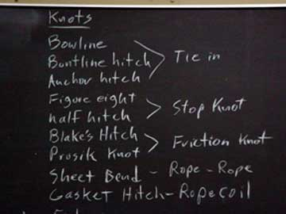
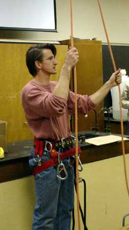
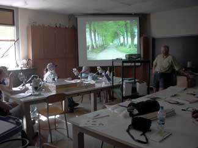

You are
lucky! There were many undergraduates interested in this project.
The idea of tree climbing sounds like a cool way to earn summer wages and
some college credit…especially if you are a biology major interested in
nature! But not everyone was chosen to go. In fact, you had
to attend hours of knot-tying and tree-climbing instruction before you
were invited to join the team.
|  |
|
|
|
The afternoon of knot-tying lessons in Dr. Keller’s lab at Central Missouri State University (CMSU) was led by Kenny Snell. Kenny was on Dr. Keller’s earlier GSMNP research team and wrote his master’s thesis on the distribution of myxomycetes based on the data collected in the GSMNP. |
| Kenny is an expert climber and a patient and friendly teacher. Even though you had already been practicing your knot-tying, Kenny helped you improve your technique and explained which knots are the most often used, when to use them, and why you would be using each one. |
|
|  | You began to understand how important perfecting this skill would be to the safety of the climbing team. |
| Kenny and Dr. Keller both answered questions about what it is like to be a member of a field research team and talked about their experiences in the field and with climbing. You also meet Dr. Joe Ely, plant ecologist and statistician, who helped develop the grant objectives. He will be working alongside Dr. Keller, coordinating the field work and much of the data collection will be used for his ecological studies of the GSMNP. |
|
The team
will be using the double rope climbing technique and a”Big Shot” to get
their throw lines up into the trees. The double rope method
of ascending the tree will require a whole lot of upper body strength and
more! You realized that you better start working on building strength
in your arms, legs, and “abs”.
| The Big Shot is nothing like the sling shot you played with as a kid! This thing is huge and on the end of a ten foot pole. You wondered how difficult it would be to be accurate, but practicing would have to wait for the outdoor clinic with Charly Pottorff. |
 |

Charly
Pottorff is a professional arborist
from Manhattan, Kansas who has been climbing trees for over 50 years. He
met the team “hopefuls” out at Pertle Springs, a park-like area owned by
CMSU, for a day of hands-on training with the Big Shot and climbing gear.
Charly helped each student get “saddled up” and to practice the art of
climbing trees. He shared a lot of stories and tips throughout the
day, but the one you remember the most is that even though “the saddles
are getting lighter and less bulky, you still have to have the conditioning,
the strength, and the mind to figure out what you got to do when you are
up there 200 feet.” You begin to realize that every tree will pose
it’s own set of challenges and that you will have to be able to solve problems
as you go.
|
Charly Pottorff , professional arborist from Manhattan, Kansas |
“saddled up” |
You also
meet Dr.
Steve Wilson at the climbing school session. Dr. Wilson is an
entomologist
at CMSU and is a world expert on planthoppers. He is part of the
research team and will oversee the collection and identification of insects.
|
Dr. Steve Wilson, Entomologist |
|

You were
really excited when you got the call from Dr. Keller inviting you to join
the team…and then you got nervous. What would it be like to live
with ten or so strangers for three week stretches…in a “field station”???
Did you have the strength to climb high into the canopy
each day? Did you know enough to be able to recognize and collect
specimens, or would you miss something that might be important? …had
you gotten yourself in too deep? …but, wow! …it still sounded like such
a great adventure…you would just have to learn as you went! With
a bit of jitters, you decided to “go for it!”

You are still a bit nervous about this adventure when you show up for the day-long pre-trip meeting. You don’t really know any of the other students and you feel like you have a lot to learn. Drs. Keller, Wilson, and Ely are all there to give you and the other students an overview of what you will be doing and to go over last minute details and packing reminders. You are pretty amazed when you learn that all three faculty members are going AND they are doing it on their own time. It’s pretty cool that they don’t mind spending so much time with a bunch of undergraduates. Everyone seems pretty nice and you start getting more excited and less nervous. But you decide that you better take plenty of batteries for your discman…the trip in the van from Warrensburg, Missouri to the Cade’s Cove field station in Tennessee will take…get this…at least THIRTEEN hours!

Dr. Wilson gives you and the other students a presentation and handout of the representative members of the most common orders of insects and more specific information on the planthoppers that his studies focus on. He poses some questions that will be explored with the insects collected during the trip: Will numbers of planthoppers be greater in the canopy or on the ground? Are the derbid planthoppers as rare in the canopy as they are on the ground? The team also gets a chance to put together a Sante canopy insect trap and learn how it works.

Dr. Ely then gives an overview of the objectives of the research, some background on the different environmental factors that will be measured, and an introduction to the bryophytes and lichens that will be collected. Dr Ely’s study of the data will focus on quantitative data and some of the collecting methods were discussed so you are beginning to get a visual picture of what tasks you will need to do while up in the tree.
Dr. Keller wraps up the day with lists of “to dos” and “to brings” and enthusiasm as he tells us that we will be “going up into trees that no one else has ever gone up in!” His excitement is infectious!